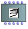
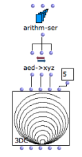

3D Curves
The 3DC Object
 | The 3DC object is similar to a tridimensional BPC. The additional "z-points" slots allows the handling of the 3rd dimension of the coordinates. |
To add a
3DC
object, type its name or go to the Classes / Basic Tools / 3D menu.
The 3DC object has five inputs and outputs :
|  Generating a 3DC in OM using the x, y and z coordinates list. |
3D Visualization
The 3DC editor allows to visualize the curve in a 3D view. It offers basic 3D navigation commands. | A 3DC and its editor. |
The
Axesoption allows to display the x , y , and z axes of the 3D object.Press
bor to change the background colour.Press
cto change the colour or the curve.
Click on the object and move the mouse to rotate the curve.
SHIFT + click and move up/down to zoom in/out
Use |
The 3DC is only editable from the optional 2D views (see below).
2D Editors
To display the three 2D editors corresponding to projections of the curves on the x/y, x/z and y/z planes, select the 2D Editors option. These editor are similar, and work exactly the same way as standard BPC editors.
On single editor (the last clicked one) is active at a time, and will then respond to key events for moving points, etc.
To zoom in/out on the 2D views the object, click and drag one of the rulers. Use the button  of the palette to restore the original (optimal) view ratio.
of the palette to restore the original (optimal) view ratio.
Use the button to navigate in a 2D view.
Note : When the Precision value is modified, the view is automatically reset to its original ratio.
Use the stadard BPC edit commands to move or delete points in the 2D editors.
Since any point belong to the three axes, it is displayed in all editors. Consequently, any modification in an editor will affect the two others, as well as the global 3D view.
To visualize the coordinates of a point, double click on it with the mouse. These coordinates can be edited, just as in a BPC.
The Precision parameter changes the precision of the points with a decimals number.
Precision changes may lead to modifying the points positions by truncating their coordinates values.
As in standard BPF/BPC editors, the | Displaying the points in a 3DC editor |